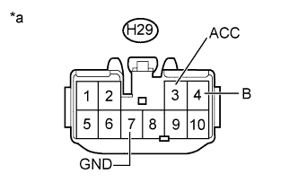
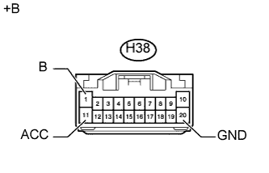

АУДИОВИЗУАЛЬНАЯ СИСТЕМА (для моделей без системы навигации) > Цепь питания радиоприемника |
| 1.ПРОВЕРЬТЕ ЖГУТ ПРОВОДОВ И РАЗЪЕМ (РАДИОПРИЕМНИК – АККУМУЛЯТОРНАЯ БАТАРЕЯ И МАССА) |
|  |
Для моделей с 6 динамиками
Отсоедините разъем H29 радиоприемника.
Измерьте сопротивление в соответствии со значениями, приведенными в таблице ниже.
| Контакты для подключения диагностического прибора | Условие | Заданные условия |
| H29-7 (GND) - масса | Всегда | Менее 1 Ом |
Измерьте напряжение в соответствии со значениями, приведенными в таблице.
| Контакты для подключения диагностического прибора | Условие | Заданные условия |
| H29-4 (B) - масса | Всегда | 11 – 14 В |
| H29-3 (ACC) - масса | Замок зажигания в положении ACC | 11 – 14 В |
| *a | Вид спереди разъема со стороны жгута проводов: (к радиоприемнику в сборе) |
|  |
Для моделей с 9 динамиками
Отсоедините разъем H38 радиоприемника.
Измерьте сопротивление в соответствии со значениями, приведенными в таблице ниже.
| Контакты для подключения диагностического прибора | Условие | Заданные условия |
| H38-20 (GND) - масса | Всегда | Менее 1 Ом |
Измерьте напряжение в соответствии со значениями, приведенными в таблице.
| Контакты для подключения диагностического прибора | Условие | Заданные условия |
| H38-1 (B) - масса | Всегда | 11 – 14 В |
| H38-11 (ACC) - масса | Замок зажигания в положении ACC | 11 – 14 В |
| *a | Вид спереди разъема со стороны жгута проводов: (к радиоприемнику в сборе) |
|
| ||||
| OK | ||
| ||